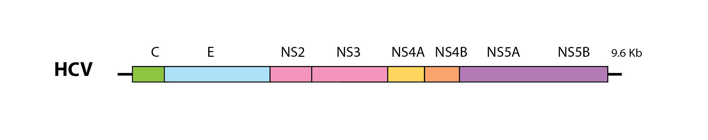
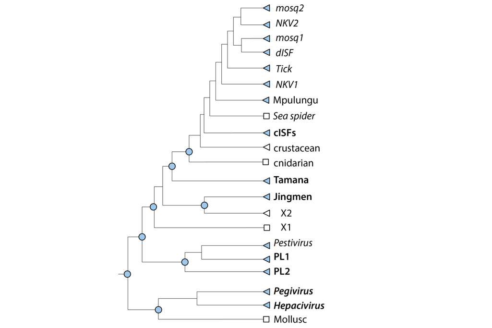

Virus data included in Flavivirid-GLUE
This page provides background information on the virus-associated data items included in the project - information about endogenous flaviviral elements (EFVs) can be found here.
Please note: links to files on GitHub are mainly designed to indicate where these files are located within the repository. To investigate files (e.g. tree files) in the appropriate software context we recommend downloading the entire repository and browsing locally.
Those specifically interested in hepatitis C virus (HCV) may want to investigate HCV-GLUE and NCBI-HCV-GLUE. These GLUE projects were developed specifically for HCV and incorporate a graphical user interface (GUI) that allows users to browse the underlying GLUE database via 'point-and-click' methods.
The MRC-University of Glasgow Centre for Virus Research hosts an instance of the GUI version of HCV-GLUE.
Flavivirid genome features
Currently, four flavivirid genera are recognised: Pegivirus, Pestivirus, Hepacivirus and Flavivirus. These genera contain viruses that have monopartite genomes ~10 kilobases (Kb) in length and encoding one or more large polyproteins that are co- and post-translationally cleaved to generate mature virus proteins. The structural proteins of the virion - capsid (C), premembrane (prM) and envelope (E) - are encoded toward the 5’ end of the genome, while genes encoding non-structural (NS) proteins are located further downstream.

A schematic representation of the hepatitis C virus (HCV) genome. C=capsid; E=envelope; NS=non-structural; Kb=kilobases
A diverse variety of novel ‘flavivirid-like’ virus species have been described over recent years. Most of these newly identified viruses have yet to be incorporated into official taxonomy. They exhibit a much greater range of variation in genome structure than is found among representatives of officially recognised flavivirid genera, with genome sizes ranging up to 20Kb, and one novel group – the Jingmenviruses – comprises viruses with genomes that are segmented rather than monopartite.
We defined a standard set of genome features for flavivirids, reflecting current knowledge, and incorporated this information into Flavivirus-GLUE.
Flavivirus sequences and sequence-associated data
The sequence data in this project are organised into multiple distinct sources. Each source contains data in either GenBank XML or plain FASTA format. The type of data is indicated by the name of the source (all GenBank XML sources contain 'ncbi' in the name).
GenBank XML files are imported into this project directly from NCBI GenBank using an appropriately configured version of GLUE's GenBank importer module. The core Flavivirid-GLUE project contains a single NCBI-derived source - ncbi-refseqs - that contains 'master reference' genome sequences for each flavivirid species included in this project.
Where possible, we prefer to use sequences obtained via GenBank since it represents the principle source of published nucleotide sequence data. However, FASTA sources can also be used in GLUE, making it straightforward to expand private instances of this GLUE project with unpublished sequences.
Genbank sequences are uniquely identified within GLUE projects by their GenBank accession numbers. Sequences included in this project are linked to auxiliary data in tabular format.
Flavivirid sequence-associated data recorded in Flavivirid-GLUE are as follows:
| Parameter | Type | Definition |
|---|---|---|
| full_name | VARCHAR | Full name of the virus this sequence is derived from |
| name | VARCHAR | Abbreviated name of the virus this sequence is derived from |
| subfamily | VARCHAR | Taxonomy - virus subfamily (proposed) |
| supergenus | VARCHAR | Taxonomy - virus supergenus (proposed) |
| genus | VARCHAR | Taxonomy - virus genus |
| subgenus | VARCHAR | Taxonomy - virus subgenus |
| clade | VARCHAR | Taxonomy - virus clade |
| segment | INTEGER | Genome segment (Jingmenviruses only) |
| host_group | VARCHAR | Taxonomic group of host species |
| vector_group | VARCHAR | Taxonomic group of vector species |
| reservoir_group | VARCHAR | Taxonomic group of reservoir species |
| isolate_name | VARCHAR | Name of the virus isolate this sequence is derived from |
| isolation_host | VARCHAR | Species (Latin binomial) virus was isolated from |
| length | INTEGER | Length of the sequence |
| pubmed_id | INTEGER | PubMed ID of manuscript associated with sequence |
| gb_create_date | GenBank | GenBank creation date of the sequence |
| gb_update_date | VARCHAR | Date of most recent GenBank update |
| country | VARCHAR | Country where virus was isolated |
| place_sampled | VARCHAR | Location of sampling (state, region, or city) |
| collection_year | INTEGER | Year virus was isolated |
| collection_month | VARCHAR | Month virus was isolated |
| collection_month_day | VARCHAR | Day of month virus was isolated |
These data are recorded in GLUE's underlying relational database. GLUE's core database schema was extended to include these fields, as defined in this schema extensions file.
Flaviviridae reference genomes - fully annotated sequences
We defined 'master' reference sequences to represent recognised flavivirid genera/subgenera, as follows:
Genus Flavivirus
- Mosquito-borne flavivirus group 2: Yellow fever virus 1 (NC_002031)
- Mosquito-borne flavivirus group 1: Dengue virus 1 (NC_001477)
- Tick-borne flaviviruses: Powassan virus (NC_003687)
- No-known vector group 1: Apoi virus (NC_003676)
- No-known vector group 2: Sokuluk virus (NC_026624)
- Dual-host insect-specific flavivirus group: Lammi virus (NC_024806)
- Mpulungu flavivirus group: Mpulungu flavivirus (LC582740)
- Classical insect-specific flavivirus group: Kamiti river virus (NC_005064)
- Crustacean flavivirus group: Crangon crangon flavivirus (MK473878)
Other Flaviviridae genera
- Tamanavirus: Tamana bat virus (NC_003996)
- Jingmenvirus: Jingmen tick virus segment 1 (NC_024113)
- Jingmenvirus: Jingmen tick virus segment 3 (NC_024114)
- Pestivirus: Bovine viral diarrhea virus 1 (NC_001461)
- Pesti-like 1 (PL2): Soybean cyst nematode virus 5 (NC_024077)
- Pesti-like 2 (PL2): Shuangao lacewing virus 2 (NC_028373)
- Hepacivirus: Hepatitis C virus (NC_004102)
- Pegivirus: Human pegivirus 2 (NC_027998)
We explicitly defined the locations of genome features on master reference sequences using GLUE commands (see here).
Multiple sequence alignments - maps of sequence homology
Multiple sequence alignments (MSAs) are the basic currency of comparative genomic analysis. MSAs constructed in this study are linked together using GLUE's constrained MSA tree data structure.
A 'constrained MSA' is an alignment in which the coordinate space is defined by a selected reference sequence. Where alignment members contain insertions relative to the reference sequence, the inserted sequences are recorded and stored (i.e. sequence data is never deleted).
GLUE projects have the option of using a data structure called an alignment tree to link constrained MSAs representing different taxonomic levels, and we've used this approach in Flavivirus-GLUE.

The schematic figure above shows the 'alignment tree' data structure currently implemented in Flavivirus-GLUE. For the highest taxonomic levels (i.e. at the root) we aligned only the most conserved regions of the genome, whereas for the lower taxonomic levels (i.e. within and below genus level) we aligned complete coding sequences. We used an alignment tree data structure to link these alignments, via a set of common reference sequences. The root alignment contains reference sequences for major clades, whereas all children of the root inherit at least one reference from their immediate parent. Thus, all alignments are linked to one another via our chosen set of master reference sequences.
Alignments in the project include:
- A ‘root’ alignment (i.e. family-level) constructed to represent homology between the two largest subgroupings in the Flaviviridae.
- ‘major-lineage’ alignments constructed to represent proposed homologies between representative members of major Flaviviridae lineages.
- ‘minor-lineage’ alignments constructed to represent proposed homologies between representative members of 'minor' Flaviviridae lineages.
- ‘genus-level’ alignments constructed to represent proposed homologies between the genomes of representative members of specific flavivirid genera.
- ‘subgenus-level’ alignments constructed to represent proposed homologies between the genomes of representative members of specific flavivirid subgenera.
Phylogenetic trees - reconstructed evolutionary relationships
We used GLUE to implement an automated process for deriving midpoint rooted, annotated trees from the alignments included in our project.
Trees were constructed at distinct taxonomic levels:
- ‘major-lineage’ phylogenetic trees showing reconstructed evolutionary relationships between representative members of major flavivirid lineages.
- ‘minor-lineages’ phylogenetic trees showing reconstructed evolutionary relationships between representative members of minor flavivirid lineages.
- ‘genus-level’ phylogenetic trees showing reconstructed evolutionary relationships between representative members of specific flavivirid genera.
- ‘subgenus-level’ phylogenetic trees showing reconstructed evolutionary relationships between representative members of specific flavivirid subgenera.